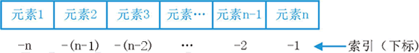
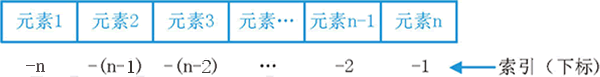

首页 > Python > 列表、元组、字典和集合
什么是序列，Python序列详解（包括序列类型和常用操作）
所谓序列，指的是一块可存放多个值的连续内存空间，这些值按一定顺序排列，可通过每个值所在位置的编号（称为索引）访问它们。
为了更形象的认识序列，可以将它看做是一家旅店，那么店中的每个房间就如同序列存储数据的一个个内存空间，每个房间所特有的房间号就相当于索引值。也就是说，通过房间号（索引）我们可以找到这家旅店（序列）中的每个房间（内存空间）。
在 Python 中，序列类型包括字符串、列表、元组、集合和字典，这些序列支持以下几种通用的操作，但比较特殊的是，集合和字典不支持索引、切片、相加和相乘操作。

图 1 序列索引值示意图
除此之外，Python 还支持索引值是负数，此类索引是从右向左计数，换句话说，从最后一个元素开始计数，从索引值 -1 开始，如图 2 所示。

图 2 负值索引示意图
序列实现切片操作的语法格式如下：
例如，对字符串“C语言中文网”进行切片：
比较特殊的是，列表类型在进行乘法运算时，还可以实现初始化指定长度列表的功能。例如如下的代码，将创建一个长度为 5 的列表，列表中的每个元素都是 None，表示什么都没有。
例如，检查字符‘c’是否包含在字符串“c.biancheng.net”中，可以执行如下代码：
和 in 关键字用法相同，但功能恰好相反的，还有 not in 关键字，它用来检查某个元素是否不包含在指定的序列中，比如说：
这里给大家给几个例子：
为了更形象的认识序列，可以将它看做是一家旅店，那么店中的每个房间就如同序列存储数据的一个个内存空间，每个房间所特有的房间号就相当于索引值。也就是说，通过房间号（索引）我们可以找到这家旅店（序列）中的每个房间（内存空间）。
在 Python 中，序列类型包括字符串、列表、元组、集合和字典，这些序列支持以下几种通用的操作，但比较特殊的是，集合和字典不支持索引、切片、相加和相乘操作。
字符串也是一种常见的序列，它也可以直接通过索引访问字符串内的字符。
序列索引
序列中，每个元素都有属于自己的编号（索引）。从起始元素开始，索引值从 0 开始递增，如图 1 所示。图 1 序列索引值示意图
除此之外，Python 还支持索引值是负数，此类索引是从右向左计数，换句话说，从最后一个元素开始计数，从索引值 -1 开始，如图 2 所示。

图 2 负值索引示意图
注意，在使用负值作为列序中各元素的索引值时，是从 -1 开始，而不是从 0 开始。
无论是采用正索引值，还是负索引值，都可以访问序列中的任何元素。以字符串为例，访问“C语言中文网”的首元素和尾元素，可以使用如下的代码：str="C语言中文网" print(str[0],"==",str[-6]) print(str[5],"==",str[-1])输出结果为：
C == C
网 == 网
序列切片
切片操作是访问序列中元素的另一种方法，它可以访问一定范围内的元素，通过切片操作，可以生成一个新的序列。序列实现切片操作的语法格式如下：
sname[start : end : step]
其中，各个参数的含义分别是：- sname：表示序列的名称；
- start：表示切片的开始索引位置（包括该位置），此参数也可以不指定，会默认为 0，也就是从序列的开头进行切片；
- end：表示切片的结束索引位置（不包括该位置），如果不指定，则默认为序列的长度；
- step：表示在切片过程中，隔几个存储位置（包含当前位置）取一次元素，也就是说，如果 step 的值大于 1，则在进行切片去序列元素时，会“跳跃式”的取元素。如果省略设置 step 的值，则最后一个冒号就可以省略。
例如，对字符串“C语言中文网”进行切片：
str="C语言中文网" #取索引区间为[0,2]之间（不包括索引2处的字符）的字符串 print(str[:2]) #隔 1 个字符取一个字符，区间是整个字符串 print(str[::2]) #取整个字符串，此时 [] 中只需一个冒号即可 print(str[:])运行结果为：
C语
C言文
C语言中文网
序列相加
Python 中，支持两种类型相同的序列使用“+”运算符做相加操作，它会将两个序列进行连接，但不会去除重复的元素。这里所说的“类型相同”，指的是“+”运算符的两侧序列要么都是列表类型，要么都是元组类型，要么都是字符串。
例如，前面章节中我们已经实现用“+”运算符连接 2 个（甚至多个）字符串，如下所示：
str="c.biancheng.net"
print("C语言"+"中文网:"+str)
输出结果为：
C语言中文网：c.biancheng.net
序列相乘
Python 中，使用数字 n 乘以一个序列会生成新的序列，其内容为原来序列被重复 n 次的结果。例如：str="C语言中文网" print(str*3)输出结果为：
'C语言中文网C语言中文网C语言中文网'
比较特殊的是，列表类型在进行乘法运算时，还可以实现初始化指定长度列表的功能。例如如下的代码，将创建一个长度为 5 的列表，列表中的每个元素都是 None，表示什么都没有。
#列表的创建用 []，后续讲解列表时会详细介绍 list = [None]*5 print(list)输出结果为：
[None, None, None, None, None]
检查元素是否包含在序列中
Python 中，可以使用 in 关键字检查某元素是否为序列的成员，其语法格式为：value in sequence
其中，value 表示要检查的元素，sequence 表示指定的序列。例如，检查字符‘c’是否包含在字符串“c.biancheng.net”中，可以执行如下代码：
str="c.biancheng.net"
print('c'in str)
运行结果为：
True
和 in 关键字用法相同，但功能恰好相反的，还有 not in 关键字，它用来检查某个元素是否不包含在指定的序列中，比如说：
str="c.biancheng.net"
print('c' not in str)
输出结果为：
False
和序列相关的内置函数
Python提供了几个内置函数（表 3 所示），可用于实现与序列相关的一些常用操作。| 函数 | 功能 |
|---|---|
| len() | 计算序列的长度，即返回序列中包含多少个元素。 |
| max() | 找出序列中的最大元素。注意，对序列使用 sum() 函数时，做加和操作的必须都是数字，不能是字符或字符串，否则该函数将抛出异常，因为解释器无法判定是要做连接操作（+ 运算符可以连接两个序列），还是做加和操作。 |
| min() | 找出序列中的最小元素。 |
| list() | 将序列转换为列表。 |
| str() | 将序列转换为字符串。 |
| sum() | 计算元素和。 |
| sorted() | 对元素进行排序。 |
| reversed() | 反向序列中的元素。 |
| enumerate() | 将序列组合为一个索引序列，多用在 for 循环中。 |
这里给大家给几个例子：
str="c.biancheng.net" #找出最大的字符 print(max(str)) #找出最小的字符 print(min(str)) #对字符串中的元素进行排序 print(sorted(str))输出结果为：
t
.
['.', '.', 'a', 'b', 'c', 'c', 'e', 'e', 'g', 'h', 'i', 'n', 'n', 'n', 't']
关注公众号「站长严长生」，在手机上阅读所有教程，随时随地都能学习。内含一款搜索神器，免费下载全网书籍和视频。

微信扫码关注公众号